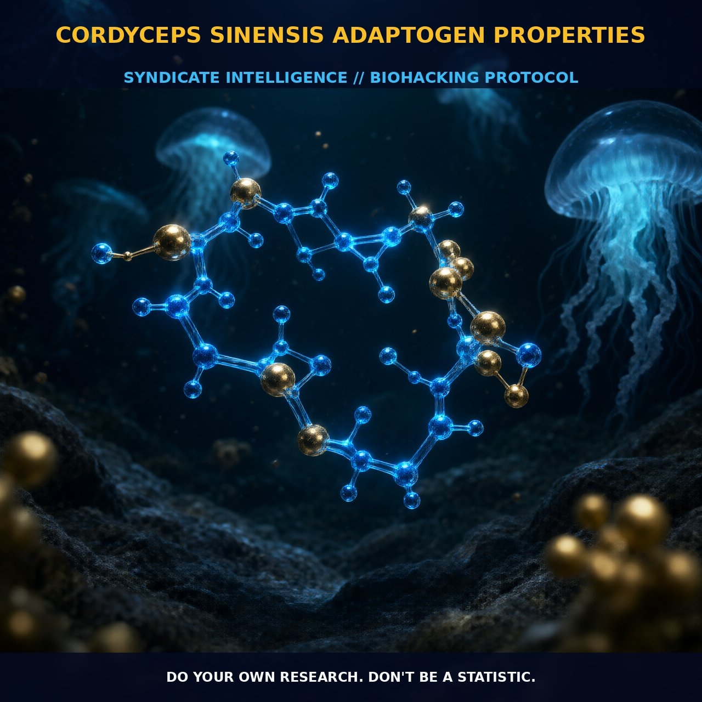

Adaptogenic Properties of Cordyceps Sinensis

1. The Mechanism
Cordyceps sinensis, a parasitic fungus with a rich history in Asian ethnomedicine, is celebrated for its adaptogenic and tonic effects. Among the myriad species of Cordyceps, C. sinensis stands out due to its unique chemical profile, which includes bioactive compounds such as cordycepin, adenosine, sterols, and polysaccharides.
Cordycepin, a nucleoside analogue composed of a purine molecule linked to a ribose sugar, is the most representative bioactive constituent and a marker of quality in C. sinensis fruiting bodies. Adenosine, another key component, is known to modulate adenosine receptors, which play critical roles in regulating cellular energy and metabolism. The presence of these compounds, along with other polysaccharides, contributes to the adaptogenic and tonic properties of Cordyceps sinensis. These compounds work synergistically to enhance mitochondrial function, improve oxygen utilization in cells, and support energy metabolism, thereby contributing to its anti-aging effects.
The chemical characterization of Cordyceps sinensis reveals a complex blend of bioactive metabolites. Cordycepin, with concentrations ranging from 6247 ± 20 µg/g of freeze-dried sample, and adenosine, with concentrations around 470 ± 55 µg/g, are the primary markers of quality in C. sinensis. These compounds interact with various biological systems, particularly the cellular energy pathways and immune response, thereby enhancing the overall adaptogenic properties of the fungus. Additionally, sterols and polysaccharides found in Cordyceps sinensis contribute to its tonic effects, promoting overall health and vitality.
2. Biological Leverage
Cordyceps sinensis exerts its biological leverage through multiple pathways, including mitochondrial function enhancement and modulation of cellular energy metabolism. The adaptogenic properties of Cordyceps sinensis are rooted in its ability to improve mitochondrial function, which is crucial for cellular energy production and overall vitality. By enhancing oxygen utilization in cells, Cordyceps sinensis supports the efficiency of the respiratory chain and ATP synthesis, thereby increasing cellular energy levels. This enhanced energy metabolism can contribute to improved cognitive function, physical endurance, and overall well-being.
Moreover, Cordyceps sinensis has been shown to modulate adenosine receptors, which play a critical role in regulating cellular energy and metabolism. Adenosine receptors, particularly A1 and A2A receptors, are involved in the regulation of neurotransmitter release and neuronal activity. The activation of these receptors by adenosine and other bioactive compounds in Cordyceps sinensis can have a calming effect on the nervous system, potentially reducing stress and promoting relaxation. Additionally, Cordyceps sinensis has shown promise in enhancing the immune system, with studies indicating its potential to modulate immune responses and support immune function.
The polysaccharides and sterols found in Cordyceps sinensis also contribute to its biological leverage by providing immunomodulatory effects. Polysaccharides, in particular, have been shown to enhance the activity of immune cells such as macrophages and natural killer cells, thereby boosting the immune response. Sterols, on the other hand, contribute to the overall health of cell membranes, which is essential for optimal cellular function. These compounds work synergistically to support immune function and overall health, making Cordyceps sinensis a valuable tonic for individuals seeking to enhance their vitality and resilience.
3. Tactical Implementation
When incorporating Cordyceps sinensis into your biohacking regimen, it is essential to consider dosage and timing to maximize its effects. While human dosing is not well-established, low-to-moderate amounts of Cordyceps sinensis can be beneficial for enhancing energy metabolism and supporting immune function. Typical dosages range from 1 to 3 grams per day, depending on the specific extract and its concentration of active compounds. It is advisable to start with lower doses and gradually increase to assess individual tolerance and response.
Timing the intake of Cordyceps sinensis is also important. Consuming it in the morning or midday can help support energy levels throughout the day, while evening consumption may promote relaxation and enhance sleep quality. Stacking Cordyceps sinensis with other adaptogens such as Rhodiola rosea or Ashwagandha can further enhance its effects, as these compounds work synergistically to support overall adaptogenic properties. Additionally, pairing Cordyceps sinensis with antioxidants such as turmeric or vitamin C can help protect cells from oxidative stress and enhance its anti-aging effects.
In practical implementation, it is crucial to ensure the quality and purity of the Cordyceps sinensis extract. Look for standardized extracts that contain high concentrations of cordycepin and adenosine, as these are the primary bioactive compounds responsible for its adaptogenic and tonic effects. Freeze-dried samples or aqueous extracts with an ethanol concentration of 50% are preferred for optimal extraction yield and bioavailability.
Prostar Life Hack
Start with a low dosage of 1 gram of Cordyceps sinensis per day, gradually increasing to assess individual tolerance and response. Consume in the morning or midday to enhance energy levels, and in the evening to promote relaxation and sleep quality.
[ AUTHOR: LEAD TECHNICAL RESEARCHER ]